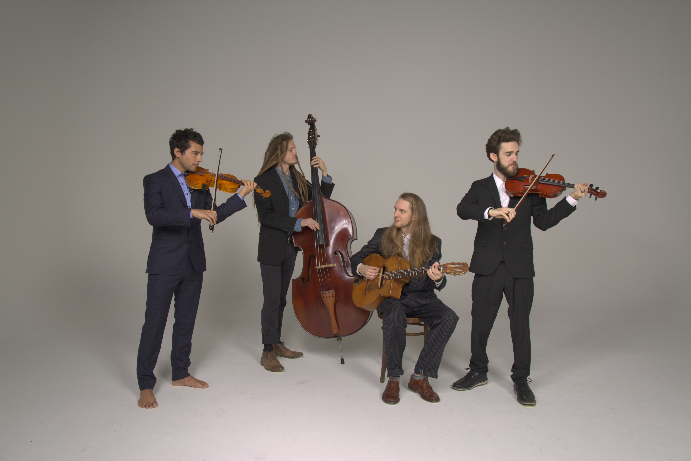

.jpg)
Fourchestra formed in 2018 when four acoustic jazz musicians got together to play some shows. Originally the band was to play for private parties and functions but within a few months of playing together they decided to meet regularly to work on original compositions and arrangements on top of their basis repertoire of standards.
Fourchestra is a former project of mine together with fellow violinist/composer/arranger, Milan Wisiak designed to extend the repertoire of traditional acoustic jazz. It was fundamentally based on a way of aiming to play jazz on the violin without falling into the trap of playing 'jazz-violin'. As such the inspiration for repertoire was the bigband in all its multifaceted glory.
The arrangements were designed to feature extended violin techniques while emulating horn-section-style backings and shout-choruses giving the feeling of a larger section despite using only two melody players. These included left-hand techniques such as double stops weaved into two-voice melodic lines to create supplementary passages of three and even four-part harmony in the style of three and four-way close voicings one would find in big band music. Right-hand techniques such as chopping, balzando (in combination with left-hand pizzicato) and sul ponticello playing were also used to create additional grooves and colours.
Fourchestra formed originally having auditioned to work in conjunction with Live Music Now performing in schools, homeless shelters, retirement homes and potentially even in prisons (although this sadly never transpired) in and around Vienna. At the same time the band was in demand for private parties and functions including literary nature walks in Waldviertel.
.jpg)
For two years Fourchestra continued producing innovative arrangements and original compositions culminating in the recording of an EP (see above).
With three band members based in Vienna and one in Linz it wasn't easy to maintain regular rehearsals and with the arrival of Covid-19 restrictions the band went into early retirement.

At least for the time being...
.jpg)